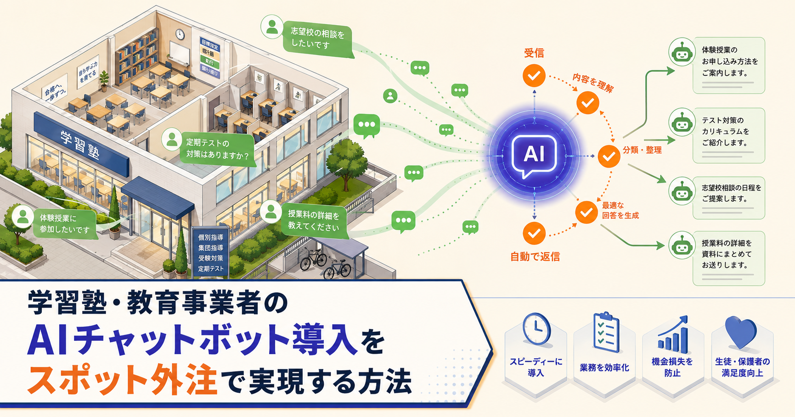

発注者向け｜AI開発
学習塾・教育事業者のAIチャットボット導入をスポット外注で実現する方法｜生徒対応を自動化する3ステップ
学習塾・スクールはAIチャットボットを導入することで、定型問い合わせ対応の最大80%を自動化し、夜間・休日も即時回答できる体制を構築できます。スポット外注を使えば最短2週間・5〜20万円で導入可能です。
学習塾 AIチャットボット
教育事業者 AI問い合わせ自動化
塾 LINE chatbot スポット外注
記事を読む